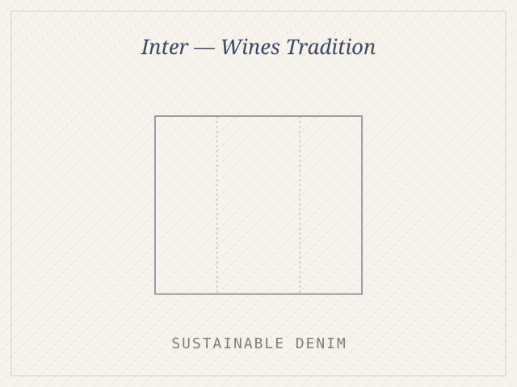

Roots by Sujata Agrawal
Three-month internship in handcrafted party wear — shirt design development, fabric manipulation and client-facing design under designer Rumit Prajapati.
Read the case study →
Pantaloons — Visual Merchandising
Six in-store brand displays built end-to-end for Peregrine, 7alt, Ajile, SF Jeans, People and Street 808 — from customer profiling to floor execution.
Read the case study →
Sustainable Saree Fashion
Repurposing old sarees into contemporary lehenga separates — a zero-waste study in heritage, circular fashion and emotional memory.
Read the case study →
CLO 3D — The Rathore Court
A five-look collection developed from Rajasthani miniature-painting architecture — motif extraction, working patterns and full 3D garment simulation.
Read the case study →
Romeo & Juliet — Costume Design
Character-driven 16th-century Italian costume design for six roles, mapped scene-by-scene against act, lighting and emotional arc.
Read the case study →
Sustainable Denim Collection
Discarded denim and industry waste cotton, rebuilt into unisex smart-casual wear inspired by Kantha, Gudri and Gujarati patchwork.
Read the case study →